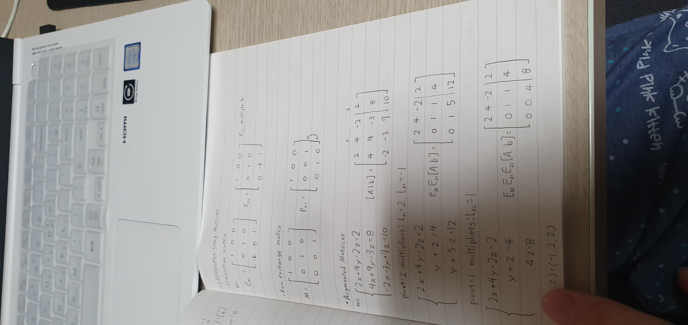
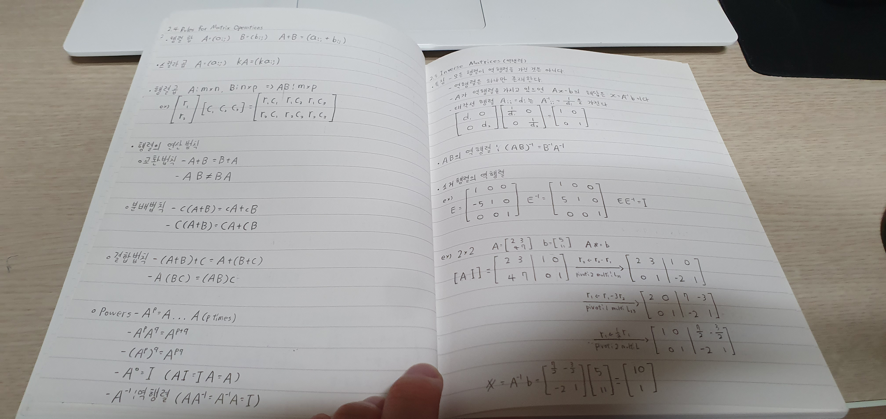

10월 7일 공부기록
컴퓨터 프로그래밍2 재귀함수 실습과 과제를 미리 해보았다.
피보나치 수열
public class FibonacciTest {
public static long recursiveFibonacci(int n){
if(n == 0)
return 0;
else if(n == 1)
return 1;
else
return recursiveFibonacci(n-1) + recursiveFibonacci(n - 2);
}
}
순차탐색
public class SequentialSearchTest {
public static int sequentialSearch(ArrayList list, T target, int begin, int end) {
if(begin + 1 == end) {
return -1;
}
if(list.get(begin).equals(target))
return begin;
else
return sequentialSearch(list,target,begin + 1,end);
}
}
이진탐색
public static int binarySearch(ArrayList> list, T target, int begin, int end) {
list.sort(null);
int mid = (int)((end + begin)/2);
if(end - begin< 0)
return -1;
if(list.get(mid).compareTo(target) == 0)
return mid;
else if(list.get(mid).compareTo(target) == 1)
return binarySearch(list, target, begin, mid - 1); //왼쪽에 존재
else if(list.get(mid).compareTo(target) == -1)
return binarySearch(list, target, mid + 1, end); //오른쪽에 존재
return 0;
}
10월 8일 공부기록
인공지능 공부2
-
확률적 모델링 : 통계학 이론을 데이터 분석에 응용한 것으로 초창기 머신 러닝 형태이다.
이와 관련되어 가장 잘 알려진 알고리즘 중 하나는 나이브 베이즈 알고리즘이다. - 초창기 신경망 : 성공적인 첫 번째 신경망 애플리케이션인 LeNet은 1989년 벨 연구소에서 초창기 합성곱 신경망과 역전파를 연결하여 만들었다.
-
<커널 방법 : 1990년 대 인기 있는 머신 러닝 접근 방법으로 그 중 서포트 벡터 머신(SVM)이 가장 유명하다.
SVM이 결정 경계를 찾는 과정
- 결정 경계가 하나의 초평면으로 표현될 수 있는 새로운 고차원 표현으로 데이터를 매핑한다.
- 초평면과 각 클래스의 가장 가까운 데이터 포인트 사이의 거리가 최대가 되는 최선의 결정 경계를 찾는 마진 최대화라는 단계를 거친다.
-
결정트리 : 플로차트와 같은 구조를 가지며 입력 데이터 포인트를 분류하거나 주어진 입력에 대해 출력 값을 예측 한다.
이를 적용한 것 중 랜덤 포레스트 알고리즘과 그래디언트 부스팅 머신이 유명하다. - 신경망의 재림 : 2010년 경에 심층 신경망으로 이미지 분류 대회에서 우승한 것으로 부터 다시 신경망이 주목을 받으면서 딥러닝이 주목을 받기 시작했다.
-
딥러닝의 특징 : 층을 거치면서 점진적으로 더 복잡한 표현이 만들어진다.
이런 점진적인 중간표현이 공동으로 학습된다.
10월 10일 공부기록
인공지능 교육 2주차
몬테카를로
V(s) = 도달한 장소에 따라 지난간 땅들에 점수를 부여함
v(s) <- v(s) +a(G(s) - v(s)) G(s) =
Q(s,a) function : V(s)에서 State와 Action을 한 묶음으로 생각(땅의 점수를 내리지 않고 가는 길목의 점수를 내림)
Q-Learning
Sarsa의 s,a에서 a를 제거
내용이 너무 어렵다.ㅠㅠ 구글링을 해서 내용을 잘 정리해봐야겠다.
10월 11일 공부기록

